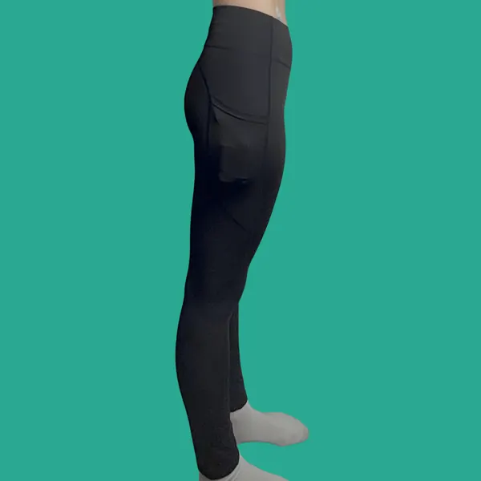
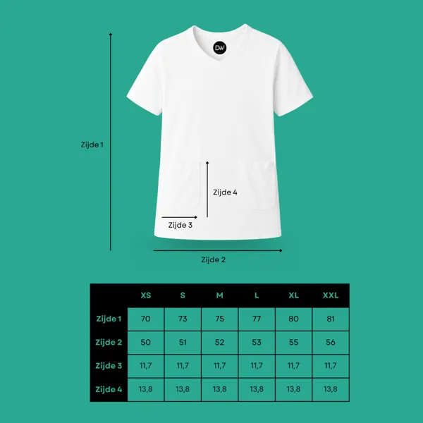

Vrij bewegen met je insulinepomp.
Kleding met slimme pompzakjes en een discrete slangdoorvoer, en transparante patch pleisters die je sensor of pod extra houvast geven.

Gratis verzending
In NL vanaf € 30, naar België vanaf € 75
Discreet verpakt
Levering binnen 2-3 werkdagen
14 dagen retour
Ruilen of retourneren binnen 14 dagen
Reactie binnen 24 uur
Vragen? Mail of bel ons gerust
Vind wat bij jou past
Van t-shirts en sportkleding met pompzakjes tot patch pleisters voor je sensor.


Je pomp in het zakje, de slang erdoor
Al onze kleding heeft geïntegreerde zakjes waarin je je insulinepomp stevig opbergt. Via het discrete gaatje aan de binnenkant van de zak loopt de infuusslang netjes naar je pomp. Zo hangt er niets los.
- 2 zakjes: kies zelf links of rechts
- Stevig afgewerkt gaatje voor de infuusslang
- Zakjes ook handig voor je telefoon of sleutels
- T-shirts en hemden met klittenbandsluiting
Extra houvast voor je sensor
Transparante, waterbestendige patch pleisters met een uitsparing voor je sensor of pod.


Sportlegging + bikershort voor € 48,95
De 2-Pocket Sportlegging en de 2-Pocket Bikershort samen, in plaats van € 51,90. Voor intensieve workouts én warme dagen of onder een jurk.
Bekijk de combi dealWat klanten zeggen
Echte ervaringen, ook de verbeterpunten.
“De shirts zijn in 1 woord GEWELDIG!! Ik heb het shirt zowel privé als tijdens mijn werk gebruikt waarbij de pomp normaal gezien eigenlijk altijd in de weg zat. Dit probleem heb ik niet meer nu. Geen pomp meer die in de weg zit tijdens het in en uitstappen in de auto.”
“Na 2 dagen dragen ben ik enthousiast! Het aanbrengen van de katheter was even wennen, maar dat wordt makkelijker naarmate het shirt soepeler wordt. Tijdens huishoudelijke taken en joggen bleef mijn pomp stevig en veilig op zijn plek. Gemaakt van stevige stof.”
“Ik ben ontzettend blij met dit T-shirt! Het zit super comfortabel en is perfect ontworpen voor het discreet dragen van mijn insulinepomp. Echt een aanrader voor iedereen die dagelijks een insulinepomp draagt.”
“Ik ben tevreden over het product, maar de hals van het shirt is vrij hoog en steekt bij mij als vrouw boven andere kleding uit. De zakjes zijn ruim, waardoor de pomp wat beweegt. Het is fijn dat er aan beide kanten een zakje zit, de klittenbandsluiting werkt goed, en het materiaal is comfortabel.”
“De stof is vrij dik, wat het minder geschikt maakt om onder andere kleding te dragen. Als buikslaper vind ik de zakjes aan de voorkant onhandig om mee te slapen. Daarnaast blijft het klittenband soms haken aan mijn kleding.”
“De bikershort zit erg fijn. De stof zit fijn wat prettig is met dit warme weer. Wel kruipt het broekje iets naar boven, dus de volgende keer zal ik wellicht een maat groter bestellen.”
Tips voor elke dag

Insulinepomp dragen tijdens het sporten: 7 praktische tips
Zo blijft je insulinepomp op zijn plek tijdens hardlopen, fitness of yoga: draagplekken, kleding met pompzakken, slangdoorvoer en praktische tips.

Sensor laat los? 9 tips om je CGM-sensor beter te laten zitten
Laat je Freestyle Libre, Dexcom of andere sensor te vroeg los? Tips voor huidvoorbereiding, plakplek, zweet, kleding en overpatches.

Slapen met een insulinepomp: zo lig je comfortabel
Waar laat je je insulinepomp 's nachts? Draagplekken, nachtkleding met pompzak, slang en sensor: praktische tips voor een rustige nacht.

Maatgids: welke maat diabetes kleding past bij jou?
Welke maat t-shirt, hemd, sportlegging, bikershort of sokken kies je bij Diabeticswear? Maattabel in centimeters en pasvormadvies per product.
Veelgestelde vragen
Past mijn insulinepomp in de zakjes?
De zakjes in onze t-shirts en hemden zijn ca. 13,8 × 11,7 cm, die in de bikershort en sport rok ca. 13 × 8,5 cm. Ze zijn geschikt voor de meest gangbare insulinepompen. Twijfel je? Mail ons het type pomp, dan adviseren we je.
Hoe weet ik welke maat ik nodig heb?
Op de productpagina's van onze t-shirts en hemden vind je een maattabel. Deze vallen wat groter uit; we raden aan een maat kleiner te bestellen dan je normaal draagt. Twijfel je? Neem gerust contact op voor advies.
Wat zijn de verzendkosten?
Binnen Nederland is verzending gratis vanaf € 30; daaronder betaal je € 4,25. Naar België is verzending gratis vanaf € 75; daaronder betaal je € 5,25.
Hoe lang duurt de levering?
We streven ernaar je bestelling binnen 2-3 werkdagen te leveren.
Hoe kan ik een artikel retourneren?
Je kunt producten binnen 14 dagen na ontvangst retourneren. Stuur een e-mail naar info@diabeticswear.com met de reden van retour; je ontvangt dan de vervolgstappen. Zie ook ons retourbeleid.